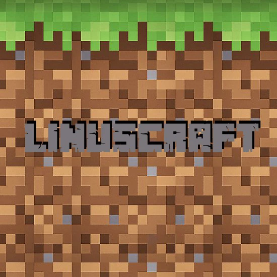

Linuscraft
joined Minelife at the start of Season I. Having been an aktiv member of all three seasons so far, there are a lot of builds and projects from him.In season one he formed a group with a few other members called the "Redboots", identified by their symbol of red boots. Together they built a base, shops and held events.
Linuscraft also made a german video series in this season which is sadly not available to watch anymore.
In season two a few of the Redboots members, including Linuscraft, collaborated on yet another base. The base included different farms and was supposed to have the first iteration of The Redboots House.
His season three builds include a lot of Redboots focused stuff in the shopping district. One of them being the finally built Redboots House.
He also constructed a little beach island next to the townhall.
Linuscraft
Links
YouTubeInformation
MemberJoined: Season I
From: Germany